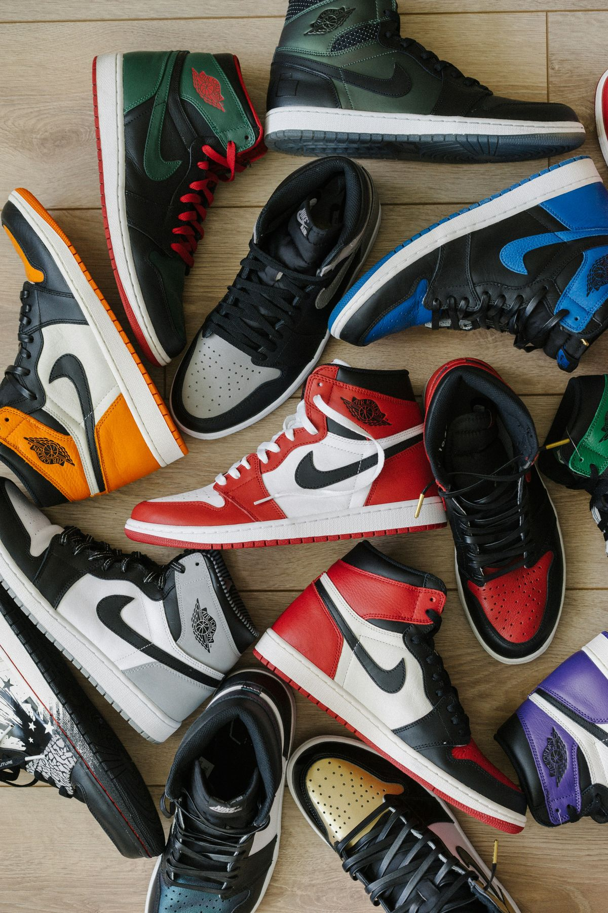

About Sneaks: Our Story

How We Started
Our founder's love for sneakers goes all the way back to childhood. He'd collect newspapers and magazines, following every story about the newest drop in town, and dreaming of the day he'd own a personal collection of his own.
In his teenage years, that dream turned into action, he started saving up and buying pairs whenever he could. Word got around, and soon he was reselling to friends and people in the community. As demand grew, so did the vision, and what started as a passion project became Sneaks: a proper business built on a lifelong love for sneakers.
Our Authenticity Guarantee
Every pair sold through Sneaks is inspected and verified before it's listed. We stand behind the authenticity of every sneaker we sell.
Our Mission
To make rare and sought-after sneakers accessible to sneakerheads and collectors, with guaranteed authenticity on every pair.
Our Vision
To become Durban's most trusted destination for authentic sneaker resale, known for a curated selection and a strong local sneaker community.
Ready to see what is in stock? Browse our current sneaker stock, send us an enquiry, or visit our Florida Road store.